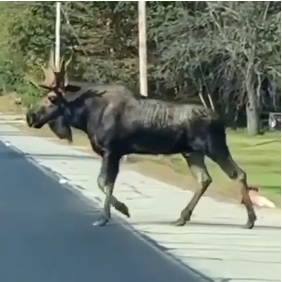
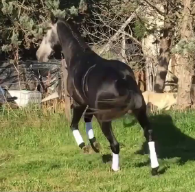

Comparisons
Generated Mesh Animation
Visual comparison of generated mesh animation with the baseline.

"A moose walks straight ahead."
Puppeteer
Ours

"A horse trots forward."
Puppeteer
Ours
Left-click and
drag to rotate
Right-click and
drag or
WASD
to move
Scroll to zoom
Click to pause
Generated Skeletal Motion
Visual comparison of generated skeletal motion with the baseline.